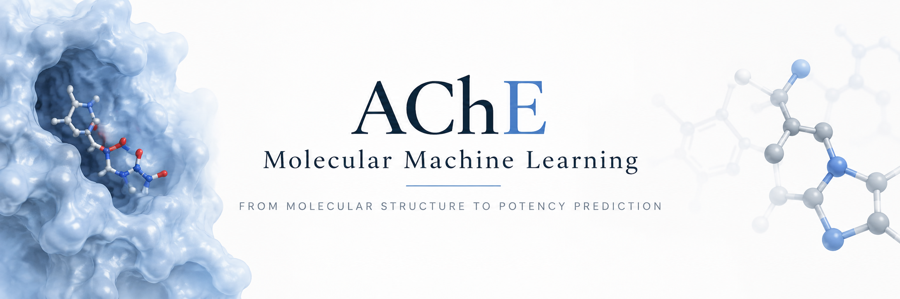
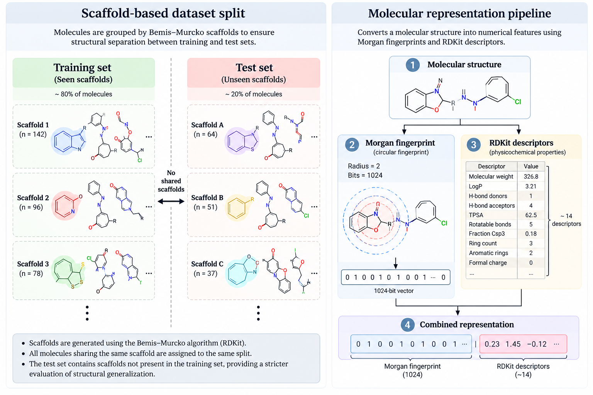
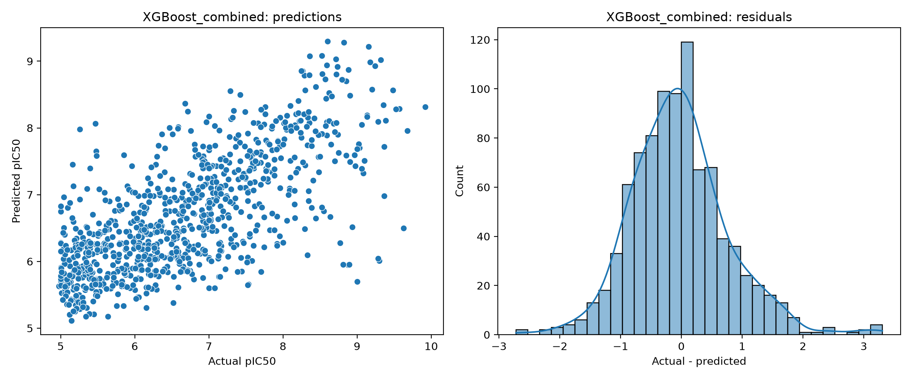
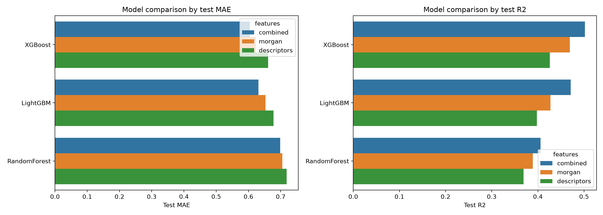
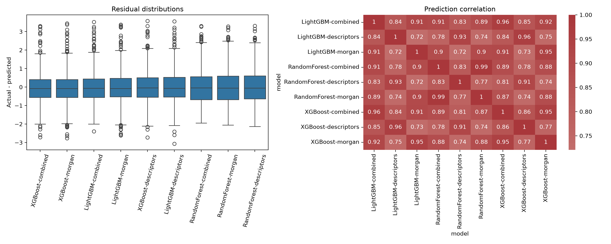

Predicting AChE inhibitory potency from molecular structure.
An evidence-grounded investigation of acetylcholinesterase QSAR modelling: ChEMBL activity curation, pIC50 transformation, molecular fingerprints, physicochemical descriptors, scaffold-separated evaluation, ensemble learning and graph-based modelling.

Why acetylcholinesterase?
The modelling target is a real biological endpoint: molecular structure → measured AChE inhibitory potency. The landing page keeps that biological problem distinct from claims about therapeutic efficacy.
Cholinergic signalling, at the level relevant to this study
Acetylcholinesterase (AChE) is a serine hydrolase that rapidly hydrolyses the neurotransmitter acetylcholine. Its catalytic activity regulates the lifetime of acetylcholine in cholinergic signalling.
In this project, inhibitors are not modelled as therapeutic agents directly. The computational target is a curated quantitative potency label against AChE.
From biology to QSAR
Medicinal-chemistry datasets contain molecules with measured activities. QSAR asks whether reproducible information encoded by molecular structure can explain or predict variation in those measurements.
External biological resources
Use these to inspect the target and source database independently.
What is actually being predicted?
Input
Curated molecular structures associated with human AChE bioactivity records from ChEMBL target CHEMBL220.
Endpoint
Experimental IC50 values are normalized to nM and transformed as pIC50 = −log10(IC50 × 10⁻⁹).
Question
How accurately can molecular structure predict curated AChE potency under a scaffold-separated evaluation protocol, and how does performance change with representation and model family?
From literature-derived activity records to a modelling cohort.
ChEMBL aggregates measurements from multiple experimental sources. The dataset therefore represents a collection of observations rather than one homogeneous experiment.
Raw snapshot
Raw unit landscape
The saved audit reports nM as the dominant unit, with smaller numbers of μg/mL and several pM/μM encodings requiring normalization.
A scrollable audit trail, not a black box.
Each stage changes what the final regression target means. The full curation sequence is exposed here so the 4,571-row cohort is traceable.
Raw ChEMBL retrieval
8,793 records associated with CHEMBL220 and IC50 measurements.
Validity / null handling
8,793 → 8,072 records.
Structure cleaning
Salt removal and canonicalized molecular representation.
InChIKey identity
Structure-level identity used for downstream grouping and deduplication.
Potential duplicate removal
8,072 → 7,248 records.
Unit support filter
7,248 → 7,185 records.
IC50 normalization
All retained supported units expressed on a common nM scale.
pIC50 transformation
7,185 → 7,185 with finite potency labels.
Replicate MAD filter
7,185 → 7,110. 34 groups exceeded the MAD threshold.
Exact duplicate removal
7,110 → 6,387 records.
Equality relation
6,387 → 5,695; non-“=” relations excluded.
Potency threshold
5,695 → 4,571 final molecular identities at IC50 ≤ 10,000 nM.
Attrition overview
Final potency landscape
One molecule, multiple mathematical views.
The study tests whether local structural information, global physicochemical information, or their combination provides the strongest predictive signal.
Morgan fingerprint
Radius-2 circular fingerprint encoding local structural environments as a hashed binary vector.
Strength: local substructure context. Limitation: hashing can create collisions and the fingerprint does not directly encode continuous properties such as molecular weight or logP.
RDKit descriptors
A compact global physicochemical/topological representation.
These are structural proxies, not direct measures of binding affinity.
Combined representation
Morgan fingerprints concatenated with the 14 descriptors.
The saved benchmark supports a dataset-specific advantage for combining local structural and global physicochemical information.
Why scaffold separation matters.
Random molecule splits can place close analogues in both training and test sets. This study uses Bemis–Murcko scaffolds to keep scaffold groups together when constructing the saved held-out partition.
Saved original split

Important interpretation caveat
The implementation sorts scaffolds by descending group size and fills the training partition first. The resulting test set is dominated by singleton scaffolds. This is leakage-safe with respect to scaffold overlap, but it is not a balanced or random sample of scaffolds.
Therefore: performance should be described as performance on this held-out partition, not as universal generalization across AChE chemical space.
Three model families. Three representations. One held-out chemical test.
Random Forest, XGBoost and LightGBM were evaluated with Morgan, descriptor and combined representations under scaffold-grouped cross-validation and a fixed held-out test partition.
| Model | Representation | Test MAE | RMSE | R² | Pearson | Spearman | CV MAE |
|---|---|---|---|---|---|---|---|
| Random Forest | Morgan | 0.7053 | 0.8840 | 0.3889 | 0.6325 | 0.6372 | 0.6854 |
| Random Forest | Descriptors | 0.7186 | 0.8983 | 0.3690 | 0.6155 | 0.5949 | 0.7202 |
| Random Forest | Combined | 0.6985 | 0.8718 | 0.4058 | 0.6476 | 0.6446 | 0.6812 |
| XGBoost | Morgan | 0.6231 | 0.8240 | 0.4691 | 0.6905 | 0.6765 | 0.6042 |
| XGBoost | Descriptors | 0.6613 | 0.8568 | 0.4259 | 0.6533 | 0.6291 | 0.6993 |
| XGBoost | Combined | 0.6045 | 0.7981 | 0.5020 | 0.7109 | 0.6935 | 0.5974 |
| LightGBM | Morgan | 0.6530 | 0.8560 | 0.4271 | 0.6625 | 0.6558 | 0.6347 |
| LightGBM | Descriptors | 0.6780 | 0.8775 | 0.3979 | 0.6340 | 0.6082 | 0.7141 |
| LightGBM | Combined | 0.6312 | 0.8223 | 0.4712 | 0.6885 | 0.6746 | 0.6313 |
XGBoost
best original held-out MAE · combined features
LightGBM
combined-feature held-out MAE
Random Forest
combined-feature held-out MAE
What was actually optimized?
The landing page deliberately reports the saved experiment, not the larger default suggested by the code.
Optuna
The principal original saved runs contain five completed trials. Therefore this project does not claim that the final models were selected from 100 completed trials merely because a function default permitted a larger number.
Saved best configurations
Random Forest
XGBoost
LightGBM
The molecule becomes a graph.
The GNN stage replaces the fixed fingerprint with explicit atom/bond structure while retaining the 14 global descriptors.
→ 128 hidden
GRU + residual + norm
+ 14 descriptors → MLP
Node representation
Atomic number, degree, formal charge, hybridization, aromaticity, hydrogen count and ring membership.
Edge representation
13 channels: bond types, conjugation, aromaticity, ring membership and stereo indicators. Bonds are represented in both directions.
Training
AdamW · lr 0.001 · weight decay 0.0001 · Smooth L1 · gradient clipping 5 · early stopping patience 20 · seed 50 · CPU.

Saved GNN result
Best validation MAE was 0.6507 at epoch 48; training stopped at epoch 68 under the saved early-stopping criterion.
What the numbers actually say.
Aggregate metrics are only one layer of interpretation. The repository also contains predictions, residuals and diagnostic figures.




Best original model
XGBoost + Morgan + RDKit descriptors reached MAE 0.6045 pIC50, RMSE 0.7981 and R² 0.5020 on the saved 915-molecule scaffold-held-out test partition.
The R² value is not “50.2% accuracy”. MAE/RMSE describe error; Pearson/Spearman describe association/ranking; R² describes variance explained relative to the test-set mean baseline.
Why RMSE matters
RMSE (0.7981) exceeds MAE (0.6045), indicating that larger residuals contribute disproportionately to the squared-error metric.
The saved prediction tables provide the basis for molecule-level error analysis; the current project does not claim a completed causal explanation for those errors.
Classical ML vs GNN, under a clean comparison.
A dedicated audit reserves 548 validation molecules from the original training portion while retaining the same 915-molecule held-out test partition.
| Model | Features | CV MAE | Test MAE | RMSE | R² | Pearson |
|---|---|---|---|---|---|---|
| XGB Combined | 1038 | 0.6479 | 0.6352 | 0.8347 | 0.4553 | 0.6795 |
| XGB Morgan | 1024 | 0.6569 | 0.6510 | 0.8519 | 0.4326 | 0.6648 |
| RF Combined | 1038 | 0.6875 | 0.6764 | 0.8507 | 0.4341 | 0.6644 |
| RF Morgan | 1024 | 0.6948 | 0.6852 | 0.8631 | 0.4175 | 0.6506 |
| GNN Graph + descriptors | 34 | — | 0.6908 | 0.9093 | 0.3535 | 0.6225 |
| XGB Descriptors | 14 | 0.7276 | 0.6969 | 0.8892 | 0.3818 | 0.6188 |
| RF Descriptors | 14 | 0.7366 | 0.7169 | 0.8978 | 0.3698 | 0.6140 |
The scientific interpretation
On this matched partition, combined XGBoost has test MAE 0.0556 pIC50 lower than the GNN.
This does not establish that GNNs are intrinsically inferior. It establishes that this implemented architecture, training procedure, representation and split did not outperform the matched classical baselines in this experiment.
The project audits itself.
Methodological limitations are exposed rather than hidden, because they determine what the reported numbers mean.
Feature-count metadata
Original metric logs contained incorrect feature-count metadata because the logged matrix dimensions were captured before the explicitly selected model columns were passed to the estimator.
Actual: 1024 Morgan · 14 descriptors · 1038 combined.
Scaffold allocation
The saved split is leakage-safe with zero scaffold overlap, but the size-ordered allocation produces a singleton-heavy test set.
Disconnected structures
90 disconnected structures remain after salt removal in the saved audit. They were not automatically removed and require chemical inspection before stronger claims are made.
Activity threshold
The current implementation thresholds normalized IC50_nM. The audit found zero differently classified rows versus the raw-value threshold for this snapshot, but the normalized expression is scientifically clearer.
GNN edge documentation
The current implementation has 13 edge channels, not three. The current code is authoritative for the architecture description.
Single fixed test partition
Conclusions should remain tied to the saved held-out partition. Repeated scaffold splits would be needed to estimate variability more robustly.
What this study does not prove.
Answers, not just leaderboard numbers.
Representation
Combining local Morgan structural information with global descriptors was more predictive than either representation alone in the saved classical experiments.
Model family
XGBoost produced the strongest original classical result on the saved scaffold-held-out partition.
Graph learning
The implemented graph-plus-descriptor GNN did not outperform the strongest matched classical baseline. That negative result is useful because the comparison is explicit and auditable.
Principal conclusion
For this curated CHEMBL220 AChE dataset and saved scaffold-held-out evaluation protocol, engineered molecular representations combined with gradient-boosted tree learning provided stronger predictive performance than the implemented graph-based model. The result supports the usefulness of complementary local structural and global physicochemical information for this dataset, while the fixed and size-ordered scaffold partition limits claims about broader chemical-space generalization.
A research record someone else can inspect.
The repository stores source modules, data snapshots, metrics, predictions, Optuna trials, audit tables, model checkpoints and diagnostic figures.
Environment
Python 3.12.3
RDKit 2026.03.4
Pandas 2.3.3
NumPy 2.4.3
scikit-learn 1.9.0
SciPy 1.17.1
Experimental identity
Target: CHEMBL220
Endpoint: IC50 → pIC50
Morgan: radius 2 / 1024
Descriptors: 14
Seed: 50
Partitions
Original: 3656 / 915
Clean audit: 3108 / 548 / 915
Scaffold-separated test
Zero scaffold overlap
Source code ↗
Data cleaning, engineering, classical models, GNN and audit modules.
Outputs ↗
Metrics, predictions, diagnostics, audit artifacts and saved experiments.
Forensic audit ↗
Detailed audit record of implementation and methodological issues.
Complete report ↗
Full scientific report and supplementary material.
Figures ↗
Saved diagnostic and benchmark figures.
Releases ↗
Versioned repository states and future formal research releases.
What comes after the current snapshot?
Future directions are separated from completed work. Nothing below is presented as already implemented.
Methodological corrections
Inspect disconnected structures, correct metadata, explicitly normalize thresholding and reproduce the principal metrics from a clean run.
Chemical error analysis
Rank residuals, assess nearest-neighbour similarity, investigate activity cliffs and relate errors to chemical novelty.
Repeated scaffold validation
Replace reliance on one fixed scaffold partition with repeated/balanced scaffold assignments and report variability.
Graph modelling
Test message-passing depth, pooling, edge representations, descriptor integration, regularization and repeated seeds.
External validation
Evaluate against an independent or temporally separated dataset to strengthen claims about chemical generalization.
Mechanistic extensions
3D information, protein–ligand interaction modelling, docking-derived features, uncertainty estimation and constrained generative approaches.
Read the scientific report.
The landing page is the visual entry point. The report contains the full methodology, equations, tables, audit findings, reproducibility details, limitations and future-work analysis.